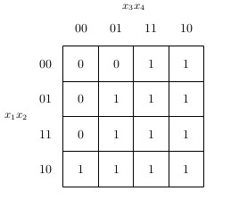

論理関数に関する処理¶
論理値(Bool3)¶
論理値は lctools.Bool3 を用いて表す． 本来，論理値は真と偽の2値であるが， lctools では不完全指定論理関数を扱うために ドントケアを含めた3値を扱う必要があるので 専用の列挙型として Bool3 を用いる．
値 |
意味 |
|---|---|
_0 |
偽(0) |
_1 |
真(1) |
_d |
ドントケア |
Bool3 に関しては Python3 の組み込み型の bool 型と同様に以下の論理演算をサポートしている．
演算子 |
関数 |
意味 |
|---|---|---|
~ |
__invert__ |
否定 |
& |
__and__ |
論理積 |
| |
__or__ |
論理和 |
^ |
__xor__ |
排他的論理和 |
< |
__lt__ |
小なり比較 |
> |
__gt__ |
大なり比較 |
<= |
__le__ |
小なりイコール比較 |
>= |
__ge__ |
小なりイコール比較 |
否定演算の真理値表は以下の通り
x |
~x |
|---|---|
_0 |
_1 |
_1 |
_0 |
_d |
_d |
AND演算の真理値表は以下の通り
x |
y |
x & y |
|---|---|---|
_0 |
_0 |
_0 |
_0 |
_1 |
_0 |
_0 |
_d |
_0 |
_1 |
_0 |
_0 |
_1 |
_1 |
_1 |
_1 |
_d |
_d |
_d |
_0 |
_0 |
_d |
_1 |
_d |
_d |
_d |
_d |
OR演算の真理値表は以下の通り
x |
y |
x | y |
|---|---|---|
_0 |
_0 |
_0 |
_0 |
_1 |
_1 |
_0 |
_d |
_d |
_1 |
_0 |
_1 |
_1 |
_1 |
_1 |
_1 |
_d |
_1 |
_d |
_0 |
_d |
_d |
_1 |
_1 |
_d |
_d |
_d |
XOR演算の真理値表は以下の通り
x |
y |
x ^ y |
|---|---|---|
_0 |
_0 |
_0 |
_0 |
_1 |
_1 |
_0 |
_d |
_d |
_1 |
_0 |
_1 |
_1 |
_1 |
_0 |
_1 |
_d |
_d |
_d |
_0 |
_d |
_d |
_1 |
_d |
_d |
_d |
_d |
もちろん，これらの論理演算はブール代数の公理を満たしている．
大小比較演算は本来のブール代数では定義されていないが， ここでは便宜上 _0 ， _1 ， _d をそれぞれ0, 1, 2 と みなして比較を行った結果を返す． また，列挙型の値はハッシュ可能であるのでPythonのdict のキーとして用いることもできる．
文字列および数値から Bool3 型へ変換を行う関数として lctools.toBool3() を定義している． 受け付ける値と結果は以下の表の通り．
入力 |
入力の型 |
結果 |
|---|---|---|
'0' |
str |
Bool3._0 |
0 |
int |
Bool3._0 |
False |
bool |
Bool3._0 |
'1' |
str |
Bool3._1 |
1 |
int |
Bool3._1 |
True |
bool |
Bool3._1 |
'X' |
str |
Bool3._d |
'x' |
str |
Bool3._d |
'D' |
str |
Bool3._d |
'd' |
str |
Bool3._d |
'*' |
str |
Bool3._d |
'-' |
str |
Bool3._d |
前述の論理演算はどちらか一方でも Bool3 型であれば残りは上の表の変換ルー ルを適用して Bool3 に変換可能であれば自動的に変換される．
Bool3と文字列間の演算例:
x = Bool3._0 & '1'
# = Bool3._0 & Bool3._1
# = Bool3._0
論理関数(BoolFunc)¶
論理関数を表すには lctools.BoolFunc を用いる．
BoolFunc は内部では 個の Bool3
を持つ(  は入力数)．
そのため，多くの入力を持つ関数を扱うことはできない．
は入力数)．
そのため，多くの入力を持つ関数を扱うことはできない．
BoolFuncの生成¶
BoolFunc のオブジェクト単純に生成にするには以下の形式を用いる．
n = 2
list1 = [Bool3._0, Bool3._1, Bool3._1, Bool3._0]
f1 = BoolFunc(list1)
str2 = "0110"
f2 = BoolFunc(str2)
この場合， f1 も f2 も2入力の排他的論理和(XOR)を表す論理関数となる．
f1 の例では生成する関数の内容を表す Bool3 のリストを与える．
f2 の例では生成する関数の内容を表す文字列を与える．
この文字列で用いられる文字は Bool3 に変換可能な文字でなければならない．
リストも場合も文字列の場合もどちらも要素数は
に等しくなければならない．ここで， は入力変数の数である．
BoolFunc の内容は生成時以外には変更することはできない． そのため，いかなる場合でも直接的・間接的に上記の初期化関数を用いる以外に BoolFunc の内容を設定することはできない． しかし，上記の初期化関数では関数の真理値表形式を表現を作る必要があり， 複雑な関数を作る場合には適切なインターフェイスとは言えない． そこで，いくつかの便利関数として`BoolFunc`のクラス関数(Pythonの@staticmethod) を用意している．
関数名 |
説明 |
|---|---|
make_const0(input_num) |
定数0関数を作る． |
make_const1(input_num) |
定数1関数を作る． |
make_literal(input_num, var_id) |
リテラル関数を作る． |
make_and(input_num) |
AND関数を作る． |
make_nand(input_num) |
NAND関数を作る． |
make_or(input_num) |
OR関数を作る． |
make_nor(input_num) |
NOR関数を作る． |
make_xor(input_num) |
XOR関数を作る． |
make_xnor(input_num) |
XNOR関数を作る． |
共通の位置引数 input_num には生成する関数の入力数を与える． BoolFunc.make_literal(input_num, var_id) は var_id の変数が1のとき出力が1となるリテラル関数を生成する． もしも否定のリテラル関数が必要な場合には， この結果に否定演算子を適用すればよい．
より複雑な関数を作る手段としてさらにいくつかの関数が用意されている．
一つの方法は BoolFunc オブジェクトに対して論理演算を適用して新しい論理関数を生成するものである． 後述するように BoolFunc の特殊メソッドとして通常の論理演算と同様の演算子が定義されている． これらはすべて BoolFunc を入力として BoolFunc を結果として出力する． この論理演算子を組み合わせることで，通常のPythonの式の形で論理関数を生成することが可能である． この方法で論理関数を生成するプログラム例を以下に示す． 詳細は論理演算の項を参照の事．
INPUT_NUM = 4
x1 = BoolFunc.make_literal(INPUT_NUM, 0)
x2 = BoolFunc.make_literal(INPUT_NUM, 1)
x3 = BoolFunc.make_literal(INPUT_NUM, 2)
x4 = BoolFunc.make_literal(INPUT_NUM, 3)
f = x1 & x2 | ~x3 & ~x4
もう一つの方法はクラス関数 BoolFunc.make_from_string(expr_string, var_dict) である． expr_string には論理式を表す文字列を与え， var_map にはそれぞれ変数名をキーにして変数番号を納めた辞書を与える．
expr_str = "x_1 & x_2 | ~x_3 & ~x_4"
var_map = {'x_1': 0, 'x_2': 1, 'x_3': 2, 'x_4': 3}
f = BoolFunc.make_from_string(expr_str, 4, var_map)
論理演算¶
BoolFunc では論理演算系の特殊メソッドを定義しているため，
BoolFunc どうしの論理演算を行なうことができる．
自明なように，論理関数どうしの論理演算の結果は論理関数となる．
その内容は，個々の入力値に対する出力値( Bool3 )に対して
同様の論理演算を行ったものと等しい．
例えば2つの論理関数 と
に対するAND演算(&)の結果を  とすると次式が成り立つ．
とすると次式が成り立つ．
この式の右辺は関数 と の間で演算を行っているのではなく， 論理値 と の間で演算を行っていることに注意．
このように論理値( Bool3 )上で定義された演算を使って， 論理関数( BoolFunc )上の演算を定義することができる． そこで，以下のような論理演算が定義されている．
演算子 |
関数 |
意味 |
|---|---|---|
~ |
__invert__ |
否定 |
& |
__and__ |
論理積 |
| |
__or__ |
論理和 |
^ |
__xor__ |
排他的論理和 |
このうち，論理否定(~)は単項演算であるため， どのような BoolFunc オブジェクトに対しても正しく動く． 一方残りの演算子は二項演算なので， オペランドの2つのオブジェクトがともに BoolFunc である必要がある． さらに，2つの論理関数の入力数が等しくなければならない．
また，2つの関数が等しいかの比較を行なう == 演算子も定義されている． もちろん，オブジェクトとして同一かどうかではなく， 関数の内容が等価かどうかを調べる．
論理演算を行なう特別な関数として compose が用意されている． これはもとの関数の入力変数を他の論理関数に置き換えるものである． 例を示す．
from lctools import BoolFunc
v1 = BoolFunc.make_literal(4, 0)
v2 = BoolFunc.make_literal(4, 1)
v3 = BoolFunc.make_literal(4, 2)
v4 = BoolFunc.make_literal(4, 3)
f1 = v1 & ~v2
f2 = ~v1 & v3
f3 = v2 & v4
f4 = v1 & v3
g = v1 | v2 | v3 | v4 # BoolFunc.make_or(4) と等価
ifunc_list = [f1, f2, f3, f4]
h = g.compose(ifunc_list)
# 結果は (v1 & ~v2) | (~v1 & v3) | (v2 & v4) | (v1 & v3)
# と等価になる．
情報の取得¶
論理関数に関する情報を取得するメソッドは以下の通り．
関数名 |
説明 |
|---|---|
input_num |
入力数を返す．@property |
val(ival_list) |
入力値に対する関数値を返す． ival_list は入力値のリスト |
gen_minterm_list() |
on-set, dc-set, off-set を表す最小項のリストを返す． 結果は Cube の list の tuple |
gen_primes() |
主項(prime implicants) のリスト を返す．主項は Cube で表される． |
gen_minimum_cover() |
最簡積和形のリストを返す． 結果は Cover のリストとなる． |
from lctools import BoolFunc
INPUT_NUM = 4
x1 = BoolFunc.make_literal(INPUT_NUM, 0)
x2 = BoolFunc.make_literal(INPUT_NUM, 1)
x3 = BoolFunc.make_literal(INPUT_NUM, 2)
x4 = BoolFunc.make_literal(INPUT_NUM, 3)
f = x1 & x2 | ~x3 & ~x4
print(f.input_num) # 4 が出力される．
print(f.val([Bool3._0, Bool3._0, Bool3._0, Bool3._0])) # Bool3._1が出力される．
内容の出力¶
論理関数の内容を出力するメソッドは以下の通り．
関数名 |
説明 |
|---|---|
print_table() |
内容を真理値表の形式で出力する． |
print_karnaugh() |
内容をかるノーズの形式で出力する． |
gen_latex_minterm_sop() |
積和標準形をLaTeX形式で出力する． |
gen_latex_maxterm_pos() |
和積標準形をLaTeX形式で出力する． |
gen_latex_table(fname) |
真理値表をLaTeX形式で出力する． 真理値表の右上に表示される関数名を fname で指定する． |
gen_latex_tables(func_list, fname_list) |
複数の関数をまとめた真理値表をLaTeX形式で 出力する．@staticmethod |
gen_latex_karnaugh(implicant_list=None) |
カルノー図をLaTeX形式で出力する． LaTeX側で karnaugh.sty を用いる必要がある． implicant_list に Cube のリストを与えると カルノー図上で積項を表示するようになる． |
gen_dpic_hypercube() |
幾何学表現用のLaTeXソースを出力する． 正確には dpic 用のm4マクロを出力する． |
これらの関数はすべて名前付きのオプション引数として var_map および fout を受け取る． var_map には変数番号をキーにして変数名を納めた辞書を与える． 省略時には BoolFunc オブジェクト固有の var_map を用いる． fout には出力先のファイルオブジェクトを与える． 省略時には標準出力が用いられる．
from lctools import BoolFunc
v1 = BoolFunc.make_literal(4, 0)
v2 = BoolFunc.make_literal(4, 1)
v3 = BoolFunc.make_literal(4, 2)
v4 = BoolFunc.make_literal(4, 3)
f = (v1 & ~v2) | (~v1 & v3) | (v2 & v4) | (v1 & v3)
この f に対する出力結果を以下に示す． なお，デフォルトの var_map は以下のようになっている．
var_map = {0: 'x_1', 1: 'x_2', 2: 'x_3', 3: 'x_4'}
この変数名を LaTeX で出力する場合，自動的に数式モードで処理されるため，
 のように下付き文字となる．
のように下付き文字となる．
f.print_table()
出力結果
x_1 x_2 x_3 x_4| f
----------------+--
0 0 0 0 | 0
0 0 0 1 | 0
0 0 1 0 | 1
0 0 1 1 | 1
0 1 0 0 | 0
0 1 0 1 | 1
0 1 1 0 | 1
0 1 1 1 | 1
1 0 0 0 | 1
1 0 0 1 | 1
1 0 1 0 | 1
1 0 1 1 | 1
1 1 0 0 | 0
1 1 0 1 | 1
1 1 1 0 | 1
1 1 1 1 | 1
f.print_karnaugh()
出力結果
x_3x_4|00|01|11|10|
\ | | | | |
x_1x_2| | | | |
-------+--+--+--+--+
00 | 0| 0| 1| 1|
-------+--+--+--+--+
01 | 0| 1| 1| 1|
-------+--+--+--+--+
11 | 0| 1| 1| 1|
-------+--+--+--+--+
10 | 1| 1| 1| 1|
f.gen_latex_minterm_sop()
LaTeXの出力結果
f.gen_latex_maxterm_pos()
LaTeXの出力結果
f.gen_latex_table('f_1')
LaTeXの出力結果

gen_latex_table() に与える関数名はLaTeXソース中では $ で囲まれているのでLaTeXの数式モードで使用可能な記法を使うことができる．
g = ~f
BoolFunc.gen_latex_tables([f, g], ['f', 'g'])
LaTeXの出力結果

f.gen_latex_karnaugh()
LaTeXの出力結果
この出力を得るためにはLaTeX側のプリアンブルに \usepackage{karnaugh-map} の記述を加える必要がある．
f.gen_dpic_hypercube()
出力結果

この関数の出力するファイルの形式はm4マクロと呼ばれる マクロプリプロセッサのソースファイルで， circuit_macros と呼ばれる回路図描画用のマクロライブラリ を適用した後で dpic と呼ばれるプログラムで LaTeX 用の 描画形式(Tikz/PGF)に変換する． 最後にLaTeXで画像生成を行っている．